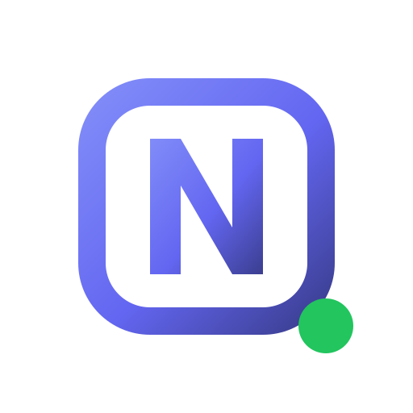

NYX Design System
The centralized token architecture, reusable component library, and visual guidelines powering the NYX dark-first messaging ecosystem.
1. Brand Identity & Generated Logo Assets
Generated brand marks, wordmarks, and visual identity concepts for NYX located in the project assets directory.
Logo Concepts
assets/branding/nyx/
Concept A — Bubble N
Primary App Icon & Favicon
Selected Active Brand
Concept B — Night Moon
Nocturnal Messenger Concept

Concept C — Monogram
Geometric Minimalist Mark
Full Brand Wordmark
2. Color Palette Tokens
A dark-first, cinematic palette optimized for OLED displays, low eye strain, and clear visual hierarchy.
Background
--nyx-color-bg
#08090D
Surface
--nyx-color-surface
#151622
Surface Elevated
--nyx-color-surface-elevated
#1C1E2E
Primary Accent
--nyx-color-accent
#7764FF
Secondary Accent
--nyx-color-accent-secondary
#B6A9FF
Primary Text
--nyx-color-text
#F2F1F8
Muted Text
--nyx-color-text-muted
#A9A6BC
Status Success / Online
--nyx-color-status-success
#67E8C0
Border
--nyx-color-border
#26273B
2. Typography Scale
Modern geometric sans-serif type hierarchy utilizing Inter with fallback to native system fonts.
Type Hierarchy Preview
.nyx-h1 (56px / 44px)
Your conversations, elevated.
.nyx-h2 (32px / 24px)
Smart Message Grouping
.nyx-h3 (20px)
Real-Time Sync & Delivery Receipts
.nyx-lead (18px)
A calmer, distraction-free messaging space designed for night owls and daylight thinkers.
.nyx-body (16px)
Consecutive thoughts merge seamlessly, keeping chats clean without visual clutter or repetitive avatars.
.nyx-caption (12px)
Verified via Row-Level Security • Open Source under MIT License
3. Spacing Scale & Corner Radii
Mathematically consistent 4px-based spacing system and thoughtful corner radii.
Spacing Scale
--nyx-space-1
4px
--nyx-space-2
8px
--nyx-space-3
12px
--nyx-space-4
16px
--nyx-space-6
24px
--nyx-space-8
32px
--nyx-space-12
48px
--nyx-space-16
64px
Radii Scale
--nyx-radius-sm
8px
--nyx-radius-md
12px
--nyx-radius-lg
18px
--nyx-radius-xl
28px
--nyx-radius-full
9999px
4. Component Inventory & Interactive States
Battle-tested components consuming shared tokens with default, hover, active, focus, and disabled states.
Buttons (.nyx-btn)
Variants: Primary, Secondary, Outline, Text
<button class="nyx-btn nyx-btn--primary">Get NYX for Android</button>
<button class="nyx-btn nyx-btn--secondary">Explore Features</button>
<button class="nyx-btn nyx-btn--outline nyx-btn--sm">Read Docs</button>
Badges & Status Indicators
Default Badge
Accent Pill
Active Now
Offline
<span class="nyx-badge nyx-badge--success">
<span class="nyx-status-indicator nyx-status-indicator--online"></span>
Active Now
</span>
Form Controls (.nyx-input)
Username must contain only letters and numbers.
<div class="nyx-input-group">
<label class="nyx-label" for="msg">Message</label>
<input type="text" id="msg" class="nyx-input" placeholder="Type a message…">
</div>
Actual Product Chat Components (Verified from Flutter main.dart)
E
Elena Rostova
Active now
Have you tested the updated build yet?
Just flashed it onto the test device.
The smart message grouping and read receipts feel silky smooth.
5. Accessibility & Implementation Guidelines
WCAG 2.2 Level AA Requirements
- Contrast Ratios: Normal text must meet at least 4.5:1 against surfaces; large text (18px+ or 14px bold) must meet 3:1. Our primary text (
#F2F1F8) on#08090Dachieves a contrast ratio greater than 16:1. - Keyboard Navigation: Every interactive element (buttons, links, form inputs) must have a visible
:focus-visiblering with high-contrast outline offset. - Reduced Motion: All CSS keyframes, transitions, and hover transforms must gracefully disable when
prefers-reduced-motion: reduceis signaled by the operating system. - Semantic HTML: Use native
<button>,<a>,<nav>, and heading tags (<h1>–<h3>) rather than generic divs.
Adding New Variants
- Always define new colors in
css/tokens.cssunder the appropriate semantic category (--nyx-color-*). - Consume tokens in
css/components.cssusing BEM class conventions (.nyx-block__element--modifier). - Never hardcode hex values directly into component declarations.